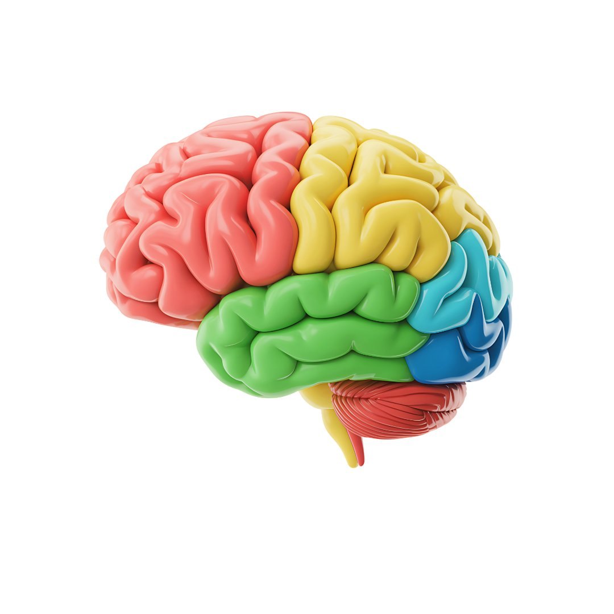

Digite a senha de acesso para continuar
Senha incorreta. Tente novamente.
Carla é diretora regional de uma empresa de tecnologia em São Paulo. Ela tem 5 minutos antes de uma apresentação para o conselho. Seu gestor financeiro levanta uma preocupação. Ela diz "Vamos resolver depois" — e a apresentação avança com dados não verificados. Três semanas depois, o erro custa R$ 200.000 em retrabalho.
Tensão central: sob pressão, o Sistema 1 opera — e o Sistema 2 não percebe.
O Sistema 1 de Carla estava sob pressão — tempo, autoridade, alto risco. Ele filtrou a preocupação por ser "tarde demais para mudar". Isso não foi descuido. Foi neurociência.
Clique no botão para revelar os exemplos um a um
O Sistema 2 não é superior — ele é necessário. E como qualquer músculo, se esgota exatamente quando mais precisamos dele.

Seu cérebro tem regiões que influenciam diretamente como você decide. Clique em cada área colorida para descobrir seu papel na liderança.
Carga cognitiva = esforço mental total na memória de trabalho.
Fatores que aumentam a carga:
Dado: qualidade da decisão cai mensuravelmente após 3 horas de reuniões consecutivas.
"Um viés cognitivo é um erro sistemático no pensamento que afeta as decisões e julgamentos das pessoas."
Arraste cada viés para a categoria correta
Clique em cada card para revelar o contexto e o exemplo real
Assista pelo menos 80% do vídeo para continuar
Você já tomou uma decisão importante — e só depois percebeu que alguma coisa influenciou seu julgamento sem você saber?
Seu cérebro é uma máquina de economizar energia. A cada segundo, ele recebe milhões de informações — e para não travar, cria atalhos automáticos. Esses atalhos foram essenciais para a sobrevivência dos nossos ancestrais.
O problema? Esse mesmo cérebro que evoluiu para fugir de predadores agora toma decisões em reuniões de diretoria. O contexto mudou. O hardware, não.
Quatro regiões do cérebro estão no centro dessa história. A amígdala dispara reações emocionais antes de você pensar. Os gânglios da base automatizam padrões repetidos. O cíngulo anterior detecta quando algo não bate. E o córtex pré-frontal tenta, nem sempre com sucesso, arbitrar tudo isso.
Os vieses cognitivos não são fraqueza nem falta de inteligência. São o resultado previsível de um cérebro que funciona exatamente como foi projetado. Viés não é uma falha de caráter. É uma funcionalidade — que às vezes se torna um defeito.
Para líderes, reconhecer como o cérebro cria esses atalhos é o primeiro passo para tomar decisões mais conscientes — e menos expostas a erros evitáveis.
Agora vamos explorar cada um desses vieses — e o que você pode fazer com eles.
Pense em uma decisão que você mais tarde lamentou. O que pode ter direcionado seu pensamento do Sistema 1 naquele momento?
Registre sua reflexão na Seção 1 do seu diário de aprendizagem.
Use o diário para registrar reflexões, exemplos e aprendizados ao longo do curso.
Você aprendeu como a mente atalha decisões — e quando esse atalho se torna um problema.
Definição e origem: erros sistemáticos que todos cometemos, todos os dias.
Você identificou por que líderes enfrentam risco especialmente alto.
Você viu como um viés não verificado custa tempo, dinheiro e credibilidade.
✅ Módulo concluído!
Avance para a próxima aula no menu lateral.